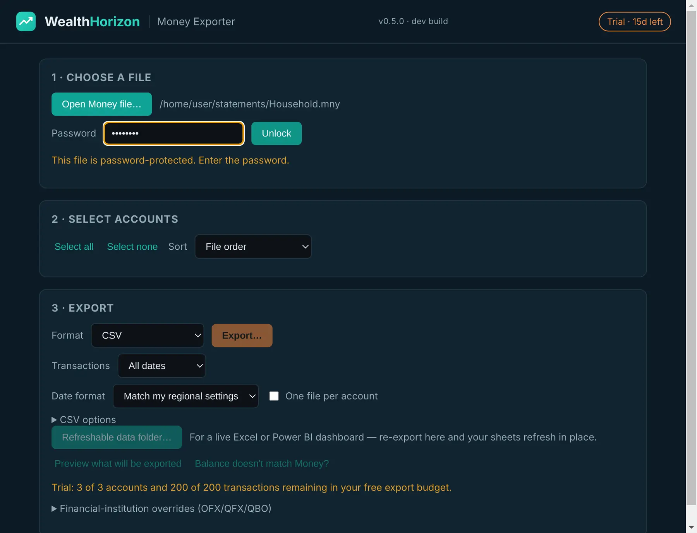
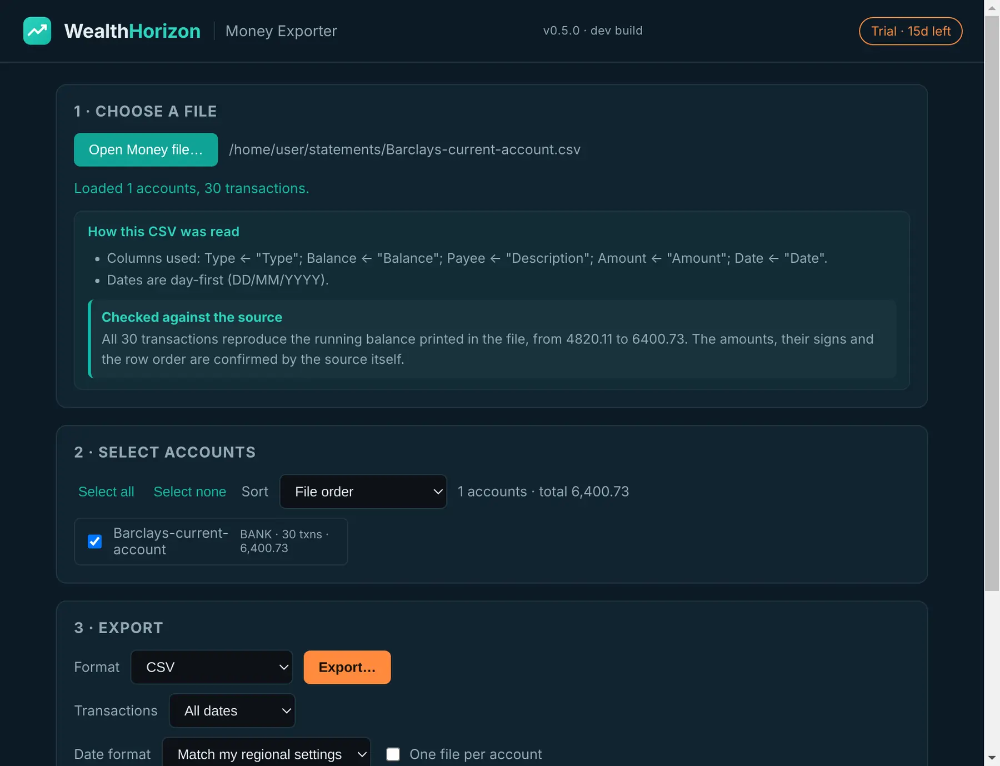
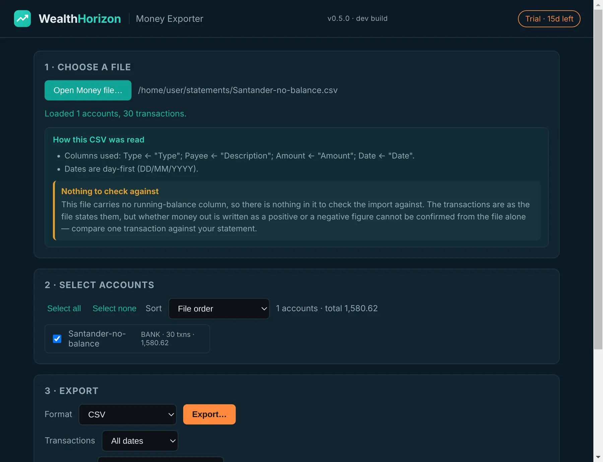
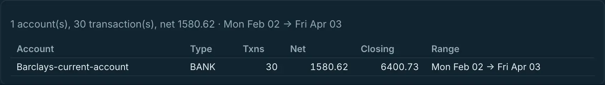

A separate product
Money Exporter
You have a file nothing will open any more. Money Exporter opens it, and saves your accounts in a format you can use. Put in a Microsoft Money file, a bank download, a spreadsheet or a PDF statement. Get out any of ten formats. It all happens on your computer. Nothing is sent anywhere.
This is a separate program. It is not part of WealthHorizon, and you buy it once. Try it first: 15 days, 3 accounts and 200 transactions. That is enough to find out whether it can read your file.
The matrix
Ten formats in, ten formats out
Anything it reads, it can write as anything else. There is one list of accounts and transactions in the middle. Readers fill that list in. Writers take it out again.
| Format | Read | Write | Notes |
|---|---|---|---|
Microsoft Money .mny |
✓ | — | Password-protected files too. It unlocks the file in memory and reads it. It never writes to your original. |
Access .mdb / .accdb |
✓ | — | Money and Access databases that are not encrypted. That includes a .mny somebody has already unlocked. |
| QIF | ✓ | ✓ | Splits are written properly, as S/E/$ records, and read back the same way. Investments use !Type:Invst. |
| OFX / QFX / QBO | ✓ | ✓ | Reads the old SGML version banks still send, and the newer XML one. Bank, credit card and investment statements. Repeats are dropped by transaction id. |
| CSV / TSV / plain text | ✓ | ✓ | It has to guess how to read these, then checks the guess. See below. When it writes one, you pick the columns and the separator. |
Excel .xlsx / .xlsm |
✓ | ✓ | Cells are read as you see them, so a date serial number and a figure in brackets both come through properly. |
| PDF statement | Best effort | ✓ | Only statements with real text in them. A scanned page is a picture, so it is refused and told you why. See the warning below. |
| IIF | — | ✓ | The tab-separated interchange format. |
| GnuCash | — | ✓ | |
| YNAB | — | ✓ |
It opens the file to see what it is. It does not trust the name. Banks name their
files badly. You get OFX files called .qfx and CSV files called
.txt. Trust the name and you get an error saying the file is corrupt, when
there is nothing wrong with it. Run --identify to see what the program makes of a file.

The part that matters
When it has to guess, it checks the guess
Money files and OFX files are easy. Every field is labelled, so there is nothing to work out. Bank CSV files and PDF statements are not labelled. The program has to guess, and a wrong guess changes your figures.


What it has to guess
- Which column is the amount?
- Is
01/02the 1st of February, or the 2nd of January? - Is money going out a minus, or a plus?
- Do the rows start with the oldest, or the newest?
- Does
1.234mean one and a bit, or one thousand two hundred and thirty-four?
Get the third one wrong and every payment turns into a receipt. Get the last one wrong and every figure is a thousand times too big.
How it checks
Most statements have a running balance down the side. That balance is the answer in the back of the book. The program tries each way of reading the file. Only one way makes the balance add up, and that is the one it keeps. If the file has no headings at all, the same test still finds the amount column.
What it tells you
Every import comes back with one of four words: verified, partly verified, failed or not available. You also get a list of what it decided, and why.
Not available is not the same as verified. It means there was no balance to check against, so nothing could be proved either way. And if a PDF does not add up, it says failed. It does not hand you the file and keep quiet.
You can overrule all of it. Set the columns yourself. Set the date order, the
decimal mark, the separator, the heading row or the sheet. Or use
--require-reconciled, and it will refuse to write anything that did not
add up.
Check the output before you trust it. A balance that adds up is good evidence. It is not a guarantee. And a statement with no balance column cannot be checked at all. So open what comes out. Compare a few months against the original. Keep the original file. This is a conversion tool. It is not an accountant, and nothing it produces is financial or tax advice.
The rest of it
What else it does
Look before you export
List the accounts in a file. Or see exactly what would come out, before anything is written. You can export a date range, just the accounts you tick, or one file per account.
A folder you can refresh
Export to a folder your spreadsheet can read, with the query already set up. Next time, export over the same folder and press refresh. You do not have to build the workbook again.
Dates that come out right
Dates come out in your computer’s own format, so a UK export is not quietly a month out. You can force ISO, UK or US instead. Going in, it always understands ISO.
Splits and investments kept whole
A split transaction stays as one transaction with its parts. It does not turn into several, and nothing gets counted twice. Investment rows keep the security, the units, the price and the commission.
When a balance is wrong
There is a diagnose mode. It compares every account against the figures in your original file, and tells you where the difference is. It runs on your machine.
More than one currency
It converts using the exchange rates stored in your file. It does not put today’s rate on a ten-year-old transaction.

Account numbers: only half solved. Microsoft Money scrambles the account number field. Give the program one account number you already know, and it works out the rest. Doing it from the file alone is still beyond us. We would rather say so than let you assume the numbers come across.
Trial and licence
Try it on your own file first
The trial answers one question. Can it read your file and give you something you can open? Every feature works. The only limits are on how much you can put through it.
Free trial
See if it reads your file
- 15 days
- Up to 3 accounts in total
- Up to 200 transactions in total
- The full preview workflow
- Every format, so you can check the output opens
The 3 and the 200 are totals across everything you export, not per export.
Personal
A one-off lifetime licence
- No limit on accounts or transactions
- Every format, in and out
- Your own files
- No subscription
Commercial
For doing it for other people
- Everything in personal
- Client and third-party migration work
- For advisers, accountants, bookkeepers and IT support
- Also a one-off lifetime licence
How you run it
There is a Windows app. Pick a file. Type the password if it has one. Tick the accounts you want. Choose a format. Export. There is also a command line version, if you would rather script it or run it on another operating system.
A licence key is tied to one machine, and you can release it again. Moving to a new computer does not mean buying it twice.
Where your data goes
Nowhere. Everything happens on your computer, diagnose mode included. Your file is never sent to us, or to anyone else. The rest of WealthHorizon works the same way.
The only thing that goes out is a licence check. If your connection drops, you can carry on working.